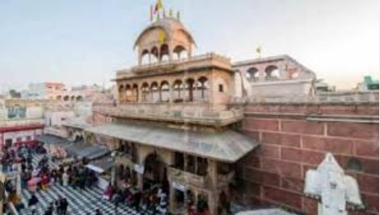

Special about banke bihari mandir
it is belived that if one gazes long enough into the eyes of shri banke bihari .
he is charmed by his attractiveness and enter ecsatic raptures, eventually losing his self-consciousness.
another distingushing element of this unusual temple is that no bellsare rung, lest they awaken the inside the temple premises asit may created the disturbance to banke bihari.
RITUALS
In banke bihari temple, banke bihari is worshipped by the small child.thus, no early morning aarti is performed and no bells are hanged anywhere on the occasion of krishna janmastmi, mangala aarti (early morning aarti)is performed curtain are drawn closed repeatedly in every few minutes to avoid the unintrrupeted darshan of shree banke bihariji as according to tne popular belief if darsan are not interrupted, banke bihari may accompany devotees to thier homes, leaving temple empty. only once a year, banke bihari holds the flutes in his hands which is on the occasion of shard purnima.